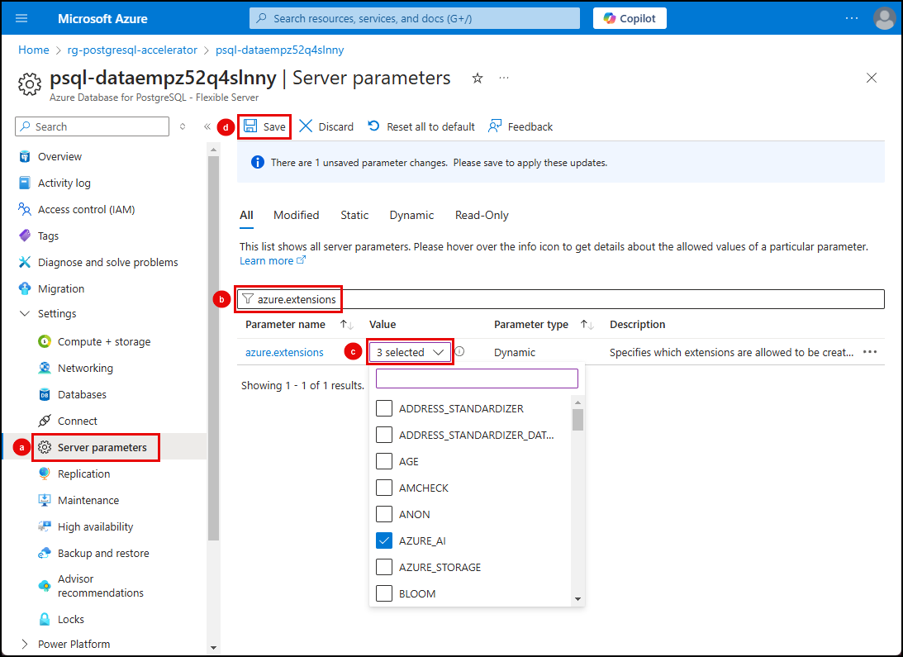

3.1 拡張機能のインストール¶
Azure Database for PostgreSQL フレキシブル サーバーでは、拡張機能を使用してデータベースの機能を拡張できます。拡張機能は、複数の関連する SQL オブジェクトを単一のパッケージにまとめ、1 つのコマンドでデータベースにロードまたは削除できます。データベースにロードされた後、拡張機能は組み込み機能のように動作します。
拡張機能の許可リスト¶
Azure Database for PostgreSQL フレキシブル サーバーで拡張機能をインストールして使用する前に、PostgreSQL 拡張機能の使用方法に記載されているように、サーバーの_許可リスト_に追加する必要があります。
拡張機能の許可リストに追加するために使用したい方法のタブを選択し、提供された指示に従ってください。
- VS Code で新しい統合ターミナル ウィンドウを開き、プロンプトで次の Azure CLI コマンドを実行します。
以下のコマンド内のトークンを、Azure 環境からの適切な値に置き換えてください。
- [YOUR_RESOURCE_GROUP]: Azure Database for PostgreSQL フレキシブル サーバーをホストしているリソース グループの名前。
- [YOUR_POSTGRESQL_SERVER]: Azure Database for PostgreSQL サーバーの名前。
- [YOUR_SUBSCRIPTION_ID]: Azure サブスクリプション ID。
次の Azure CLI コマンドを実行してください！
| Bash | |
|---|---|
1 | |
-
Azure portal で Azure Database for PostgreSQL フレキシブル サーバー インスタンスに移動します。
-
左側のリソース メニューから:
- 設定セクションを展開し、サーバー パラメーターを選択します。
- 検索フィルターに「azure.extensions」と入力します。
- VALUE ドロップダウン リストでそれぞれのボックスをチェックして、AZURE_AI、PG_DISKANN、VECTOR 拡張機能を選択します。
- ツールバーの保存を選択します。

拡張機能のインストール¶
必要な拡張機能が_許可リスト_に追加されたら、データベースにインストールできます。それらを有効にするには、PostgreSQLで各拡張機能に対してCREATE EXTENSIONコマンドを実行します。
CREATE EXTENSIONは、そのスクリプトファイルを実行することで新しい拡張機能をデータベースにロードします。このスクリプトは通常、関数、データ型、スキーマなどの新しいSQLオブジェクトを作成します。同じ名前の拡張機能がすでに存在する場合はエラーが発生するため、IF NOT EXISTSを追加することで、すでにインストールされている場合でもエラーを発生させずにコマンドを実行できます。
pgAdminを使用して、データベースに対してSQLコマンドを実行し、拡張機能をインストールします。
-
ローカルマシンで、pgAdminの開いているインスタンスに戻る（またはセットアップタスク後に閉じた場合は開く）し、PostgreSQLデータベースに接続されていることを確認します。
-
pgAdminのオブジェクトエクスプローラーで、PostgreSQLサーバーの下にあるデータベースを展開します。
-
contractsデータベースを右クリックし、コンテキストメニューからクエリツールを選択します。
以下の各タブを選択し、pgAdminのクエリウィンドウでCREATE EXTENSIONコマンドを実行して拡張機能をインストールします。
Azure AI (azure_ai)拡張機能は、データベースをAI対応プラットフォームに変換します。これにより、PostgreSQLデータベースからAzure OpenAIやAzure Cognitive ServicesなどのAzureのAIサービスに直接接続し、自然言語処理、テキスト分析、埋め込み生成などの高度な機能をデータベース操作に組み込むことができます。この統合により、AzureのAIツールとのシームレスな相互作用が可能になり、最先端のAI機能でデータベースを強化し、開発プロセスが簡素化されます。
-
azure_ai拡張機能を有効にします：SQL 1CREATE EXTENSION IF NOT EXISTS azure_ai;
pgvector (vector) 拡張機能は、PostgreSQLデータベースに高度なベクトル操作を追加します。これは、ベクトルデータをPostgreSQL内で直接保存、インデックス化、クエリすることで、ベクトル類似性検索を容易にするよう設計されています。この拡張機能は、ベクトル類似性に基づいたより複雑で意味のあるデータ取得を提供します。
-
vector拡張機能を作成します:SQL 1CREATE EXTENSION IF NOT EXISTS vector;
DiskANN (pg_diskann) 拡張機能は、効率的なベクトルインデックス作成と検索のためにDiskANNを使用するサポートを追加します。この拡張機能がインストールされると、ベクトルデータを含むテーブル列に diskann インデックスを作成できます。
-
pg_diskann拡張機能を作成します:SQL 1CREATE EXTENSION IF NOT EXISTS pg_diskann;
DiskANN拡張機能はpgvector拡張機能に依存しています。
pg_diskann は vector 拡張機能に依存しているため、同じデータベースでまず vector 拡張機能を許可して作成する必要があります。あるいは、上記のクエリで CASCADE 句を使用することもできます。これにより、PostgreSQLは拡張機能の依存関係に対して暗黙的に CREATE EXTENSION を実行します。